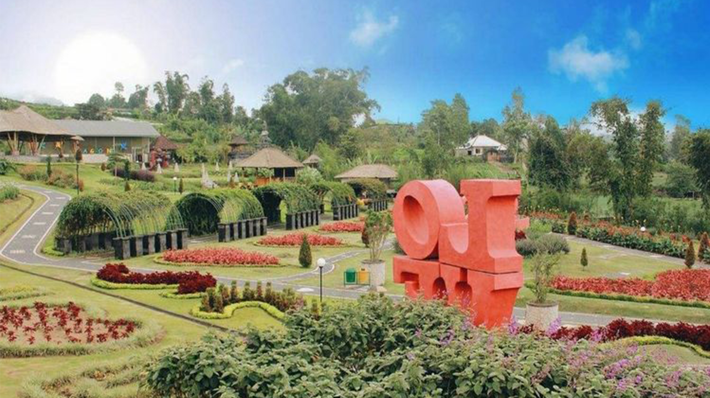
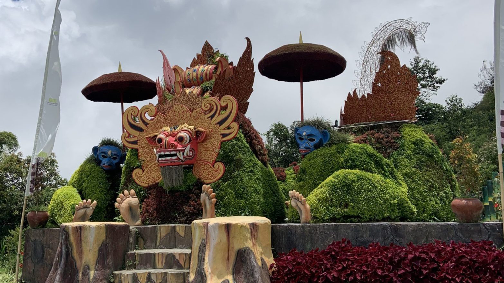

Selamat Datang di Bedugul Bali
Bedugul adalah sebuah kawasan wisata dengan danau dan gunung di Bali, Indonesia, terletak di bagian tengah pulau di dekat Danau Bratan antara Denpasar dan Singaraja. Daerah ini mencakup desa Bedugul sendiri, Candikuning, Pancasari, Pacung dan Wanagiri.
Read MoreDaya Tarik Danau Bedugul
Tempat wisata utama di Bedugul adalah Pura Ulun Danu Bratan dan Bali Botanic Garden. Bali Botanic Garden dibuka pada tahun 1959. Kebun raya ini memiliki luas 157,5 hektar, merupakan salah satu kebun raya terbesar di Indonesia.
Read MoreSejarah Singkat Bedugul
Cerita pertama adalah, Bedugul diambil dari dua kata “Bedug” karena keberadaan kelompok komunitas Muslim di sekitar Bedugul dan “Kul” dari Kul-kul yang merupakan alat komunikasi tradisional untuk orang Bali yang fungsinya hampir sama. sebagai kentongan. Penggabungan dua kata ini kemudian menjadikan nama daerah ini disebut Bedugul.
Read MoreDestination
Pura Ulun Danu Beratan
Daya Tarik Pura Ulun Danu Beratan
Dari berbagai objek wisata pura terkenal di pulau Bali, yang paling banyak di kunjungi wisatawan Indonesia adalah tempat wisata Pura Ulun Danu Bratan Bedugul Bali. Bagi anda yang belum pernah liburan ke Pura Ulun Danu Bratan Bedugul, pasti ingin tahu mengenai daya tarik Pura Ulun Danu Bratan sebagai destinasi wisata di Bali. Lalu apa saja yang menarik dapat di lihat dan di lakukan saat mengunjungi Pura Ulun Danu Beratan? Objek wisata pura Ulun Danu Bedugul sangat cocok untuk anda kunjungi jika anda menyukai keunikan arsitektur khas Bali, tata kebun dengan banyak jenis bunga, dan lingkungan alam yang masih alami. Pada saat anda tiba di pintu gerbang masuk tempat wisata Pura Ulun Danu Bratan Bedugul, anda sudah dapat melihat candi bentar, keunikan arsitektur pura, suasana asri, udara sejuk dan lingkungan bersih. Selain itu, pada saat air danau Bratan naik, Pura Ulun Danu Bedugul terlihat seakan mengapung di atas permukaan air danau. Air danau Beratan sangat jernih dan tenang. Pada siang hari kabut tipis mulai terlihat turun menutupi permukaan danau Beratan dan area perbukitan. Jadi daya tarik utama adalah dua pura yang lokasinya di tepi danau dan terlihat terapung pada permukaan air danau Beratan. Foto dari dua pura yang terlihat mengambang di tengah danau Bratan pernah ada di mata uang Rp 50,000.
Sejarah Pura Ulun Danu Beratan
Menurut informasi yang tercetak pada bagian belakang tiket masuk, sejarah Pura Ulun Danu Beratan di bangun pada tahun 1634 oleh I Gusti Agung Putu (Raja Kerajaan Mengwi). Pembangunan pura berfungsi atau di tujukan untuk pemujaan Tuhan Yang Maha Esa, dalam manifestasinya sebagai Tri Murti (Brahma, Wisnu dan Siwa). Untuk memohon kesuburan lahan pertanian, kemakmuran masyarakat, kesejahteraan manusia dan kelestarian alam agar terhindar dari bencana. Selain keunikan lokasi, bentuk arsitektur pura juga sangat unik dengan ciri khas arsitektur Bali. Tempat pemujaan di bangun dari kayu yang bentuknya seperti pagoda, dengan jumlah 11 tingkatan pada area atap bangunan. Keindahan arsitektur pura juga di tambah dengan keindahan latar belakang perbukitan, serta danau alami yang mengelilingi area pura.
Lokasi Pura Ulun Danu Beratan
Pura Ulun Danu Beratan adalah ikon pariwisata Bali, selain patung Garuda Wisnu Kencana. Lokasi pura Ulun Danu Beratan berada di sisi barat Danau Bedugul. Alamatnya berada di jalan Raya Bedugul, Candi Kuning, Kecamatan Baturiti Kabupaten Tabanan. Apabila anda memilih menginap di salah satu hotel yang berada di tepi pantai Kuta, maka akan memerlukan waktu tempuh sekitar 2 jam perjalanan untuk sampai di kawasan tempat wisata Bedugul Tabanan. Namun akan lebih dekat untuk menuju lokasi pura di tepi danau Bedugul bila anda menginap di kawasan tempat wisata Ubud Bali. Karena jarak tempat wisata Ubud menuju Bedugul kurang lebih 44 kilometer dengan perkiraan waktu tempuh satu setengah jam. Akses menuju lokasi mirip seperti perjalanan dari Jakarta menuju ke puncak Bogor. Kontur jalan menanjak dan berkelok-kelok mengitari area perbukitan.
Kebun Raya Bedugul Bali
Daya Tarik Kebun Raya Bedugul
Lebih lanjut, salah satu tempat wisata di Bedugul yang harus anda kunjungi adalah Kebun Raya Bali. Terkadang objek wisata Kebun Raya Bali, karena lokasinya berada di Bedugul, maka sering di sebut dengan nama Kebun Raya Bedugul atau Kebun Raya Eka Karya Tabanan. Selanjutnya, Kebun Raya Bedugul, salah satu hutan lindung di Bali, berfungsi sebagai paru – paru udara. Selain itu, tempat wisata Kebun Raya Bedugul, udaranya sangat sejuk dan sangat cocok untuk tempat piknik keluarga. Selanjutnya, Kebun Raya Bedugul, memiliki luas 157.5 hektar dan masuk dalam klasifikasi kebun raya terluas di Indonesia. Kebun Raya Bedugul, terletak pada ketinggian sekitar 1.400 meter dari permukaan laut, karena lokasinya berada di dataran tinggi membuat objek wisata Kebun Raya Bali di Bedugul Tabanan selalu berhawa dingin dan berkabut. Suhu udara di Kebun Raya Bedugul Tabanan, rata-rata 16 derajat celcius pada malam hari, sedangkan pada siang hari rata 20-22 derajat celcius. Ada beberapa spot menarik di Kebun Raya Bali di Bedugul Tabanan seperti: Candi Bentar. Ramayana Boulevard. Kumbakarna Laga Statue. Roses Garden. Lake Beratan View. Usada Cafe. Traditional Balinese house.
Lokasi Kebun Raya Bedugul
Botanical Garden Bedugul terletak Jalan Kebun Raya, Candi Kuning berada dalam wilayah Kecamatan Baturiti, Kabupaten Tabanan Bali. Untuk mempermudah menemukan lokasi dari objek wisata Botanical Garden Bedugul, mohon gunakan Google Maps dengan mengklik link di bawah ini!
Klik-->bali botanic garden google maps
Jarak & Waktu Tempuh
Apabila anda saat ini sedang berencana untuk liburan ke Bali Botanical Garden Bedugul, ada baiknya anda mencari tahu tentang jarak dan waktu tempuh menuju ke Bali Botanical Garden Bedugul dari lokasi anda menginap di Bali. Dengan anda tahu jarak serta waktu tempuh, maka anda akan lebih mudah membuat itinerary liburan di Bali yang efisien. Berikut ini beberapa contoh jarak dan waktu tempuh menuju ke Bali Botanical Garden Bedugul dari beberapa tempat wisata populer di Bali. Jika anda berangkat dari pantai Pandawa, menuju ke tempat wisata Kebun Raya Bali akan memakan waktu 2 jam 10 menit perjalanan dengan jarak tempuh 78 kilometer. Andai anda berangkat dari pura Uluwatu, menuju ke Kebun Raya Bali akan memakan waktu 2 jam 20 menit dengan jarak tempuh 80 km. Di Pura Uluwatu anda dapat menonton tari Kecak Uluwatu. Untuk pemesanan tiket Kecak Uluwatu, mohon klik link. Apabila kamu berangkat dari area Garuda Wisnu Kencana (GWK Bali), menuju ke lokasi Kebun Raya Bali akan memakan waktu 2 jam perjalanan dengan jarak tempuh 70 km. Selanjutnya, jika kamu berangkat dari tempat wisata Kintamani, menuju ke Kebun Raya Bedugul akan memakan waktu 1 jam 45 menit dengan jarak tempuh 59 km. Jaraknya sekitar 62,3 km atau sekitar 1 jam 46 menit dari Bandara International Ngurah Rai. Serta memiliki jarak 30 km dengan waktu tempuh 1 jam dari objek wisata pantai Lovina di Singaraja Buleleng.
Jam Buka & Waktu Terbaik Berkunjung
Bali Botanical Garden buka setiap hari dari pukul 08:00 sampai dengan 16:00. Untuk waktu terbaik berkunjung adalah di pagi hari dan saat hari kerja (weekdays). Ada baiknya anda menghindari weekend dan hari libur nasional, karena jalan raya menuju ke Bali Botanical Garden dari area tempat wisata Bali bagian selatan akan ramai dengan kendaraan.
The Blooms Garden



Daya Tarik The Blooms Gargen
Jika ingin nikmati taman bunga elok sekelas Dubai Miracle Garden, saat ini kamu tak perlu jauh kembali terbang ke Dubai. Cukup pesan ticket ke Bali, dan datangi The Blooms Garden. Taman bunga elok ini ada pada ketinggian pegunungan, hingga dara sekelilingnya benar-benar sejuk. Disamping itu, The Blooms Garden yang hits di Bali ini rupanya umurnya baru beberapa waktu saja lho. Taman ini sah dibuka untuk umum di bulan Juni 2019 lalu. Maka tujuan rekreasi yang in betul-betul mash baru dan fresh sekali. Tidaklah aneh jika tempat ini ada banyak didatangi oleh wisatawan. Sama dengan Dubai Miracle Garden yang berada di Dubai, The Blooms Garden dipenuhi dengan bunga-bunga elok vang diatur demikian rupa dalam taman. Pada saat mengunjungi kebun Bunga ini, anda akan melihat dan menemukan banyak spot cantik untuk berpose. Yakin anda tidak mau mendapatkan feed Instagram yang cantik? Bloom garden berada di atas tanah seluas lima hektar dengan berbagai tanaman bunga yang cantik dan bermacam-macam spot selfie. Selain mengunjungi tempat ini, and juga bisa berkunjung ke kebun kopi, dan panorama alam yang memikat karena berada di daratan tinggi pegunungan. Udaranya juga benar-benar fresh, dan sejuk.
Lokasi The Blooms Garden
Keuntgulan dari The Blooms Garden in ialah berada di daerah strategis, searah dengan tempat wisata Pura Ulun Danu
Bedugul. Tepatnya di Banjar Batusesa, Candikuning, Kecamatan Baturiti, Tabanan.
lokasi Bloom Garden :Map Lokasi
Objek wisata ini sangat mudah di jangkau karena berdekatan dengan beberapa tempat wisata populer di kawasan wisata
bedugul. Seperti Kebun Raya Bedugul, Pura Ulun Danu, Handara Gate, Danau Beratan Bedugul. Tidak hanya itu, tempat
wisata ini juga berdekatan dengan objek wisata sawah bertingkat Jatiluwih, yang memberikan panorama sejuk
persawahaan dan gunung.
Harga Tiket Masuk
Setiap tempat wisata di Bali, rata rata menerapkan atau memungut biaya tiket untuk masuk ke kawasan wisata tersebut.
Lalu berapa tiket mask the bloom garden sat ini? Bagi anda yang ingin berkunjung ke sini, anda harus menyiapkan uang sesuai kategori lokal atau Asing.
Taman bunga elk The Blooms Garden ini sekelas dengan Dubai Miracle Garden yang berada di Dubai. Tetapi harga ticket mask di The Blooms Garden terbilang sangatlah ramah di kantong. Silahkan cek harga tiket masuk di bawah
Harga Tiket Domestik
Dewasa: 20.000
Anak-anak: 10.000
Balita: Gratis
Harga Tiket Asing
Dewasa: 40.000
Anak-anak: 20.000
Balita: Gratis
Untuk jam operasional The Blooms Garden di buka mulai pukul 08.00-18.00 WITA. Nah, jika kamu sedang liburan di Bali, janganiah lupa datangi taman cantik yang lagi hits ini ya.
Handara Golf & Resort Bali
Daya Tarik Handara Golf & Resort Bali
Bali Handara Golf, memiliki sejarah panjang, pembangunannya diawali pada tahun 1974 oleh Ibnu Sutowo yang dikenal sebagai golf Indonesia, dengan menggandeng perancang golf dunia dari British Open Champion yaitu Peter Thomson berikut rekannya Ronald Fream dan Michael Wolveridge, setelah dua tahun dikerjakan maka pembangunannya selesai dan dibuka di tahun 1976 dengan nama Bali Handara Country Club. Hasil rancanagan dan pemandangan alam sekitarnya yang indah, pada tahun 1979 Bali Handara Country Club mendapatkan nominasi sebagai salah satu dari 50 golf terbesar di dunia oleh Golf Magazine Selection Committee. Kemudian pada tahun 1986 bekerja sama dengan Kosaido Club Japan untuk memperkuat pemasaran di negara Jepang dan namanya berubah menjadi Bali Handara Kosaido Country Club, kemitraan dengan Kosaido Club Japan berjalan cukup lama selama 22 tahun, setelah kerjasama tersebut berakhir di tahun 2008 namanya berubah menjadi Bali Handara Golf & Country Club. Mengalami masa sulit di tahun 2012 dan terjadi musibah tanah longsor sehingga merusak sejumlah bagian lapangan golf di Bali ini, bencana tersebut membuat perusahaan untuk menata kembali dan melakukan branding ulang.
Lokasi Handara Golf & Resort Bali
Bali Handara Golf dan Resort terletak di dataran tinggi Bali dengan ketinggian hampir 1.400 meter di atas permukaan laut, tepatnya di daerah Singaraja, sebelah utara Bali. Pembangunan Handara Golf & Resort Bali diprakarsai oleh Ibnu Sutowo pada tahun 1974 dan dirancang oleh Peter Thompson, juara British Open lima kali beserta rekannya, Michael Wolveridge dan Ronald Fream. Setelah dua tahun pembangunan, Bali Handara Golf & Resort Bali yang terdiri atas 18 hole par 72 dibuka untuk umum pada tahun 1976. Lapangan sejauh 6893 meter dari tee biru ini beroperasi sejak Senin hingga Minggu mulai pukul 06:00 pagi hingga pukul 10 malam dan bisa ditempuh dalam waktu dua jam dari Bandara Internasional Ngurah Rai.
Daftar Harga dan Membership
Bali Handara Golf dan Resort memberikan harga IDR 2.000.000 bagi pegolf yang ingin memainkan 18 hole dan IDR 1.200.000 untuk permainan sembilan hole. Tambahan 18 hole pada hari yang sama dikenakan IDR 1.300.000 dan sembilan hole sebesar IDR 1.000.000. Pegolf junior dikenakan harga IDR 950.000. Sementara inHouse Guest atau pegolf yang menginap di Handara Golf & Resort Bali dikenakan biaya sebesar IDR 1.200.000 untuk bermain 18 hole dan IDR 950.000 untuk sembilan hole. Tambahan 18 hole dan sembilan hole di hari yang sama dikenakan biaya masing-masing IDR 1.000.000 dan IDR 800.000. Semua biaya ini sudah termasuk Green Fee, Golf Cart dan Caddy Fee. Sementara untuk pelatihan golf di driving range dikenakan harga IDR 300.000 per jam dan pelatihan di lapangan 18 hole dikenakan biaya sebesar IDR 700.000. Rental stik dikenakan IDR 500.000 per hari.